貓的生長激素過多（Hypersomatotropism）：糖尿病貓的常見病因
主講：Jocelyn Mott, DVM, DACVIM (SAIM), FACVIM (feline and canine diabetes)
2026 年 10 月 9 日｜VET-KU × Texas A&M 內科研討會｜場次 23
目前是講義＋現場照片版，還沒有課堂逐字稿。標 💡 的是整理者的推論，之後會對照講者的說法。
⭐ 必記原則
- 生長激素過多（HS）不是罕見病：約 1/4 的糖尿病貓是 HS
- 多數 HS 貓沒有典型肢端肥大外觀（來院時 <25%），主訴就是糖尿病
- 糖尿病控制差，體重卻增加、肌肉量好：想到 HS
- HS 貓也可能控制得不錯、會低血糖、或曾經緩解又復發
- 篩檢用 IGF-1；PPV 高，但小心偽陰性和偽陽性
- 還沒打胰島素時 IGF-1 可能偏低（肝臟需要門脈胰島素）：開始胰島素 6–8 週後再驗
- 長期胰島素、肥胖、淋巴瘤、甲亢都會影響 IGF-1
- 確診靠 IGF-1 升高＋腦部 MRI／CT；但最多 25% 看不到腫塊
- 腦下垂體切除最好：糖尿病緩解 71–92%（中位 9 天），但要終身補 levothyroxine、類固醇，常需 DDAVP
- 放射治療比較普及，但效果慢又難預測，降到最低胰島素劑量中位要 285–399 天
- 內科：pasireotide 有效但極貴；cabergoline 便宜口服，35% 緩解，小腫瘤、IGF-1 <1500 最適合
- 只打胰島素：存活最短、生活品質最差；目標是改善症狀、避免低血糖，不是緩解
場次資訊與大綱
▾1. 盛行率與名詞
▾各國的盛行率
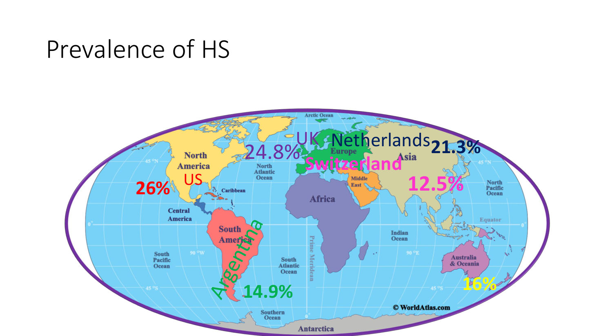
| 國家 | 糖尿病貓中 HS 的比例 |
|---|---|
| 美國 | 26% |
| 英國 | 24.8% |
| 荷蘭 | 21.3% |
| 澳洲 | 16% |
| 阿根廷 | 14.9% |
| 瑞士 | 12.5% |
- 很多研究只在血糖控制差、而且有典型肢端肥大外觀時才篩檢 HS。
- 英國的研究不管外觀、所有糖尿病貓都篩檢，結果很多貓 IGF-1 升高、有腦下垂體腫瘤。
- 症狀不明顯時，盛行率很可能被低估。
生長激素過多 vs. 肢端肥大症
| 名詞 | 意思 |
|---|---|
| Hypersomatotropism（生長激素過多） | 生長激素分泌過多的症候群（講的是激素） |
| Acromegaly（肢端肥大症） | 生長激素過多造成的特徵性外觀變化（講的是外觀） |
💡 所以用「HS」比較精確：很多貓 GH 過多，卻還沒有肢端肥大的外觀。
2. 病因與 GH–IGF-1 軸
▾病因
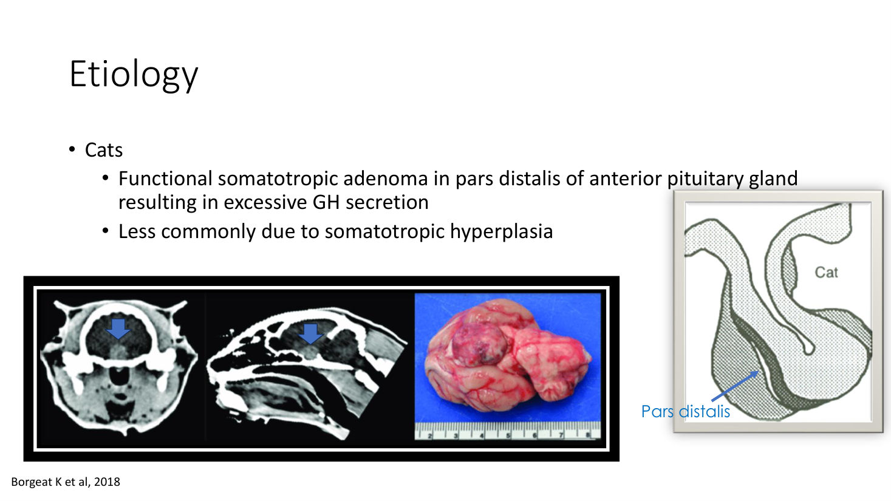
- 貓：腦下垂體前葉遠側部（pars distalis）的功能性生長激素細胞腺瘤，分泌過多 GH。
- 比較少見的是生長激素細胞增生。
GH–IGF-1 軸
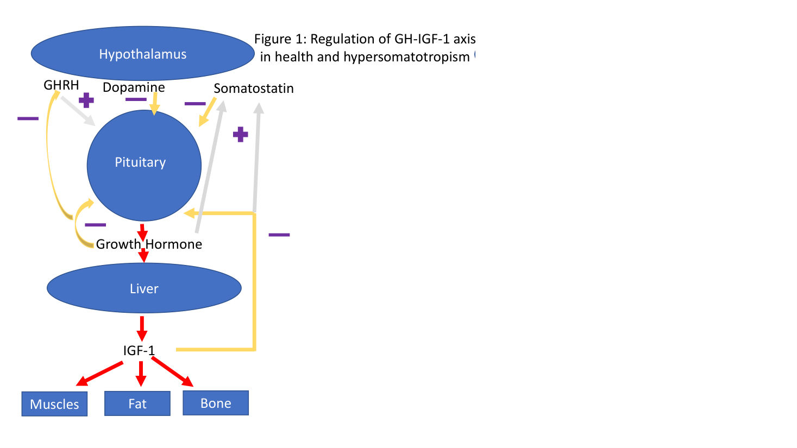
- 下視丘：GHRH 刺激、體抑素（somatostatin）和多巴胺抑制腦下垂體分泌 GH。
- GH 作用在肝臟，讓肝臟製造 IGF-1；GH 和 IGF-1 一起作用在肌肉、脂肪、骨骼。
- 正常時 IGF-1 和 GH 會負回饋抑制下視丘和腦下垂體。HS 時腺瘤不理會負回饋，持續分泌 GH。
- 💡 GH 本身會造成胰島素阻抗（抗胰島素作用），這就是 HS 引起糖尿病的原因。
📸 現場 下視丘與腦下垂體激素及其目標器官
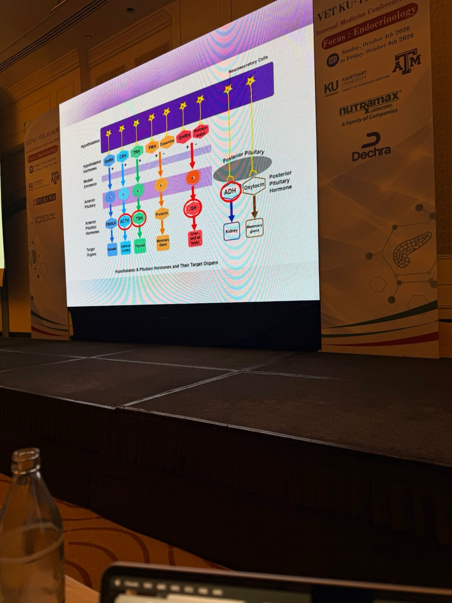
| 下視丘激素 | 腦下垂體激素 | 目標器官 |
|---|---|---|
| GnRH（+） | FSH／LH | 性腺 |
| CRH（+） | ACTH | 腎上腺皮質 |
| TRH（+） | TSH | 甲狀腺 |
| PRH（+）、多巴胺（−） | 泌乳素 | 乳腺 |
| GHRH（+）、體抑素（−） | GH | 肝臟（及全身） |
| 後葉（神經直接延伸）：ADH、催產素 | 腎臟、乳腺 | |
💡 這張圖解釋了兩件事：
- 內科藥物的原理：體抑素類似物（pasireotide）和多巴胺促效劑（cabergoline），就是模仿下視丘的「煞車」。
- 腦下垂體切除後要補什麼：GH 是治療目標；ACTH、TSH、ADH 一起被拿掉，所以術後要補糖皮質激素、levothyroxine、DDAVP。醛固酮主要受 RAAS 和血鉀控制，通常不用補。
3. 臨床表現
▾好發族群與常見表現
- 中位年齡 11 歲（4–19 歲）；沒有品種好發；公貓多於母貓。
- 通常因為糖尿病的症狀來院，常沒有典型外觀，但極度多食。
- 難控制的糖尿病是常見主訴。
- 糖尿病控制很差，體重卻增加、肌肉量好＝想到 HS！
- 但 HS 貓也可能：用一般胰島素劑量就控制得很好；因打胰島素而低血糖；有緩解後又復發的病史。
- 症狀發展緩慢，確診前平均已經 11.2 個月。來院時只有不到 25% 被懷疑有肢端肥大外觀。
💡 一般糖尿病貓控制差時會變瘦、肌肉流失；HS 貓因為 GH 的合成代謝作用，反而體重增加、肌肉維持得好。這是很實用的線索。
臨床症狀與出現時機
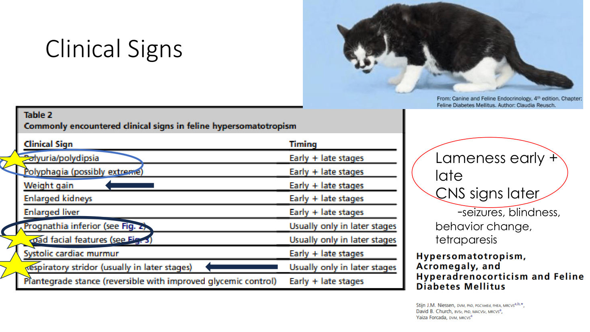
| 症狀 | 出現時機 |
|---|---|
| 多尿多渴 | 早期＋晚期 |
| 多食（可能很極端） | 早期＋晚期 |
| 體重增加 | 早期＋晚期 |
| 腎臟腫大、肝臟腫大 | 早期＋晚期 |
| 下顎前突、寬臉 | 通常只在晚期 |
| 收縮期心雜音 | 早期＋晚期 |
| 吸氣喘鳴（呼吸道） | 通常只在晚期 |
| 蹠行站姿（血糖控制好後可恢復） | 早期＋晚期 |
- 跛行：早期和晚期都可能。
- 中樞神經症狀比較晚出現：癲癇、失明、行為改變、四肢輕癱。
肢端肥大的外觀
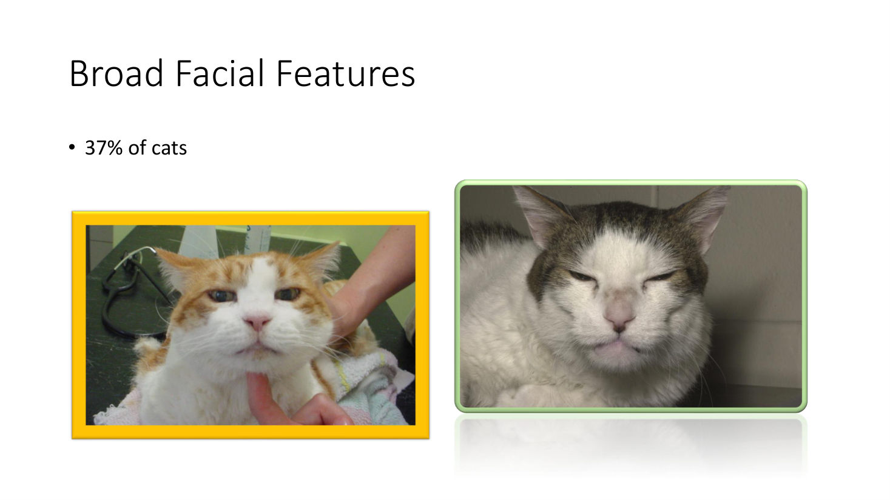
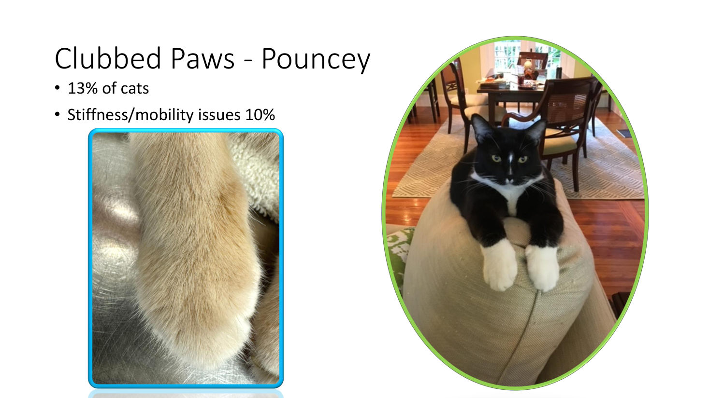
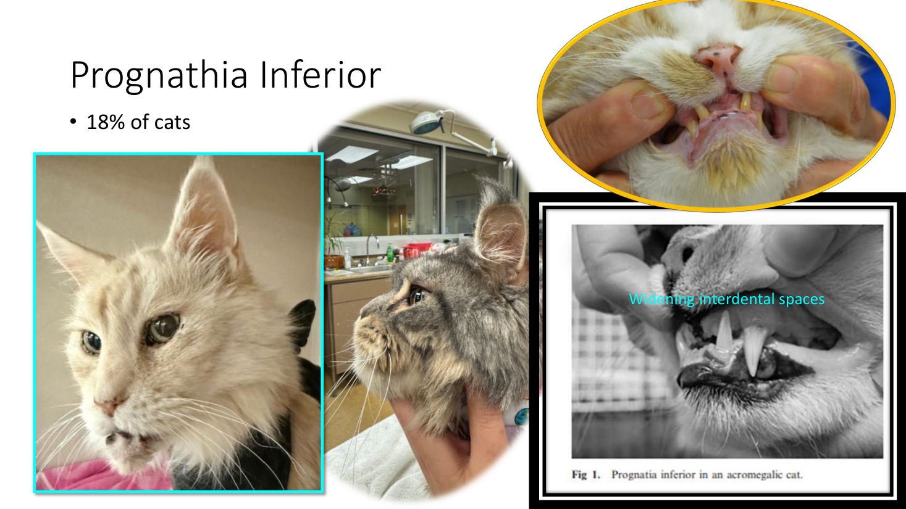
- 📄 16：外觀變化很慢，飼主常常沒發現。
- 📄 17–20：講者用「長得像演員 Ron Perlman 的貓」開玩笑，比對寬臉、粗厚五官的樣子。
- 💡 比較舊的照片和現在，或問飼主「臉是不是變大了」，有時比理學檢查更容易發現。
📸 現場 一般糖尿病 vs. HS 引起的糖尿病
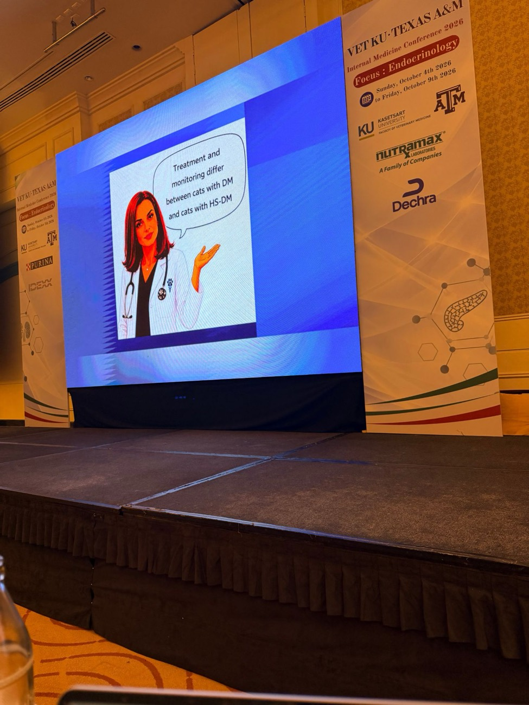
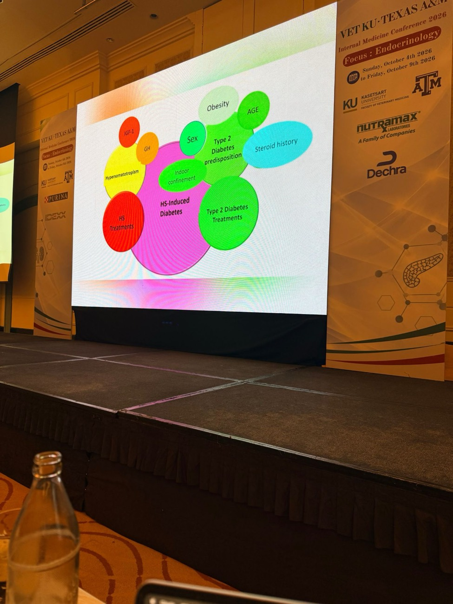
- 泡泡圖左邊：生長激素過多（GH、IGF-1）、HS 的治療。右邊：第 2 型糖尿病體質（肥胖、年齡、性別、室內飼養、類固醇使用史）、第 2 型糖尿病的治療。中間：HS 引起的糖尿病。
- 💡 HS 貓也可能同時是肥胖、老年、公貓、室內貓，所以光看「典型糖尿病貓」的樣子分不出來；治療上兩邊都要顧。
| 一般糖尿病（第 2 型） | HS 引起的糖尿病 | |
|---|---|---|
| 緩解機會 | 早期積極控制、低醣飲食有機會 | 只控制血糖幾乎不會緩解；要處理腦下垂體 |
| 胰島素 | 一般劑量 | 常需高劑量；GH 脈衝式分泌，需求忽高忽低 |
| 目標 | 控制好、追求緩解 | 改善症狀、避免低血糖，寧可少給 |
4. IGF-1 怎麼判讀
▾為什麼驗 IGF-1，不驗 GH
生長激素（GH）
- 脈衝式分泌 → 偽陰性
- 美國沒有商業化檢測
IGF-1
- HS 的篩檢工具
- 持續升高，反映過去 24 小時的 GH 分泌
- 需要有門脈胰島素
📸 現場 怎麼判讀 IGF-1（講義 PDF 沒有這張）
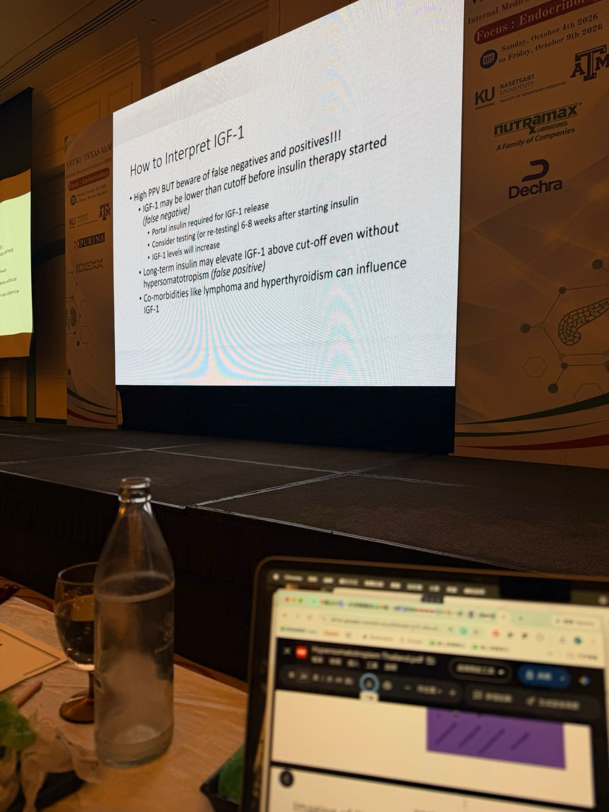
- 陽性預測值高，但要小心偽陰性和偽陽性！！！
- 開始打胰島素前，IGF-1 可能低於切點（偽陰性）
- 肝臟要有門脈胰島素才會釋放 IGF-1
- 考慮在開始胰島素 6–8 週後驗（或重驗）
- 屆時 IGF-1 會上升
- 長期打胰島素，即使沒有 HS，IGF-1 也可能超過切點（偽陽性）
- 淋巴瘤、甲亢等共病會影響 IGF-1
💡 胰島素會讓肝臟的 GH 受體表現上升。剛診斷、嚴重缺胰島素的貓，肝臟對 GH 有「阻抗」，GH 再高也做不出 IGF-1。所以新診斷糖尿病貓第一次 IGF-1 正常，不能排除 HS。
IGF-1 濃度示意圖
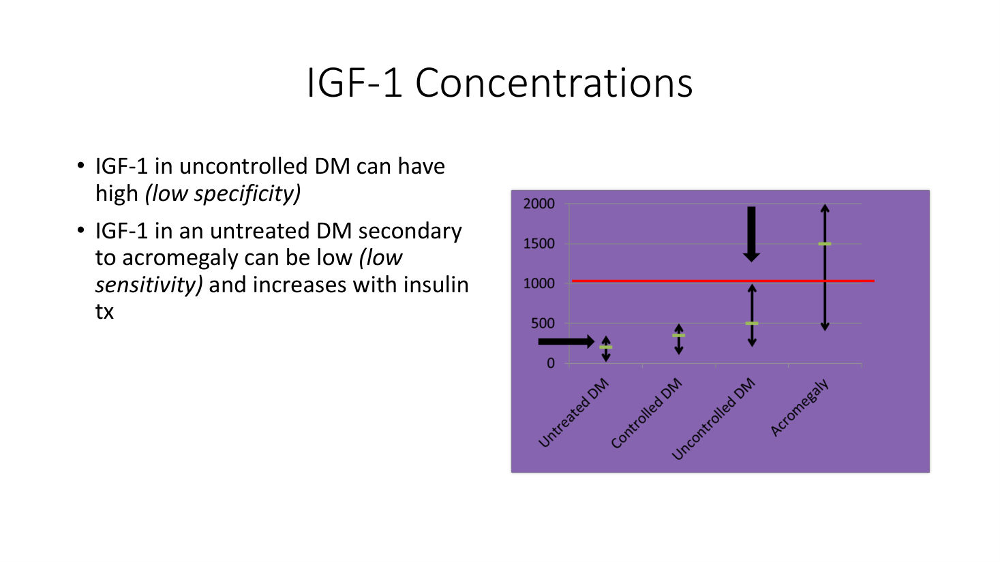
- 控制不好的糖尿病，IGF-1 可能偏高（特異度低）。
- HS 引起的糖尿病還沒治療時，IGF-1 可能偏低（敏感度低），打胰島素後才上升。
| 組別 | 典型值（ng/mL） | 範圍 | 和切點 1000 的關係 |
|---|---|---|---|
| 未治療的糖尿病 | 約 200 | 約 50–350 | 全部低於。左邊箭頭：偽陰性陷阱 |
| 控制良好的糖尿病 | 約 350 | 約 100–480 | 低於 |
| 控制不好的糖尿病 | 約 500 | 約 250–1000 | 上限碰到紅線。上方箭頭：偽陽性陷阱 |
| 肢端肥大症 | 約 1500 | 約 450–2000 | 多數超過，但下限掉到 1000 以下 |
💡 示意圖，不是精確數據。判讀原則：
- 已打胰島素一段時間、IGF-1 明顯 >1000 → 高度懷疑 HS。
- 還沒打胰島素、IGF-1 低 → 不能排除，6–8 週後重驗。
- IGF-1 在 1000 附近、又是控制不好的糖尿病 → 灰色地帶，看臨床表現和影像。
5. 影像與其他檢查
▾腦下垂體影像
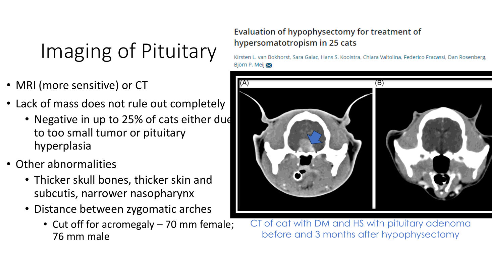
- MRI（比較敏感）或 CT。
- 看不到腫塊不能完全排除：最多 25% 的貓是陰性，因為腫瘤太小或是增生。
- 其他異常：頭骨變厚、皮膚和皮下組織變厚、鼻咽變窄。
- 兩側顴弓之間的距離：肢端肥大的切點為母貓 70 mm、公貓 76 mm。
其他輔助檢查
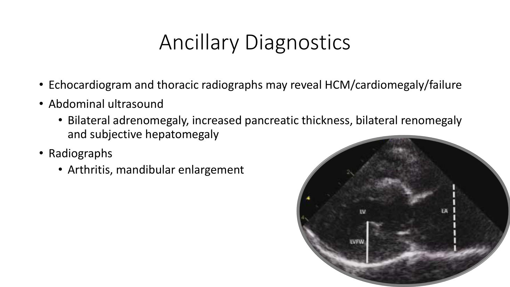
- 心臟超音波、胸腔 X 光：可能看到 HCM、心臟變大、心衰竭。
- 腹部超音波：兩側腎上腺變大、胰臟變厚、兩側腎臟變大、主觀上肝臟變大。
- X 光：關節炎、下顎變大。
💡 GH 會讓內臟器官和軟組織都變大。確診後要做全身評估，這些結果也會影響麻醉風險和治療選擇。
6. 病例 Valentine（現場病例）
▾📸 現場 病史
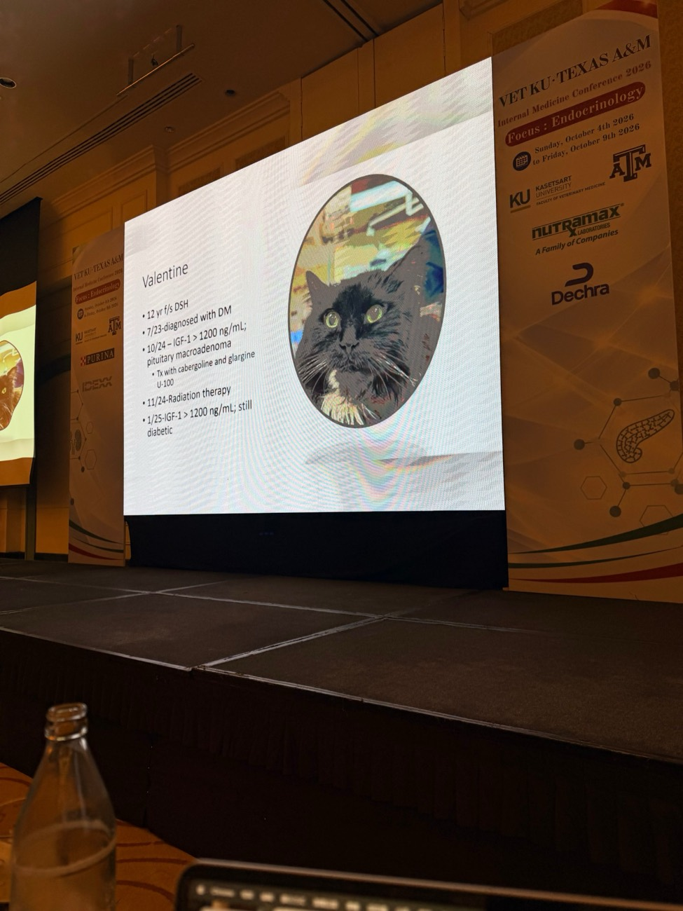
- 12 歲已結紮母貓（F/S DSH）。
- 2023 年 7 月：診斷糖尿病。
- 2024 年 10 月：IGF-1 >1200 ng/mL；腦下垂體巨腺瘤。用 cabergoline 和 glargine U-100 治療。
- 2024 年 11 月：放射治療。
- 2025 年 1 月：IGF-1 仍 >1200 ng/mL，仍是糖尿病。
💡 從糖尿病到確診隔了 15 個月（呼應 📄 11 的平均 11.2 個月）。放射治療後 2 個月 IGF-1 沒降、仍需胰島素，符合 📄 29–30：放射治療效果慢、IGF-1 通常不會明顯下降。「>1200」可能是實驗室的檢測上限。
📸 現場 檢查結果
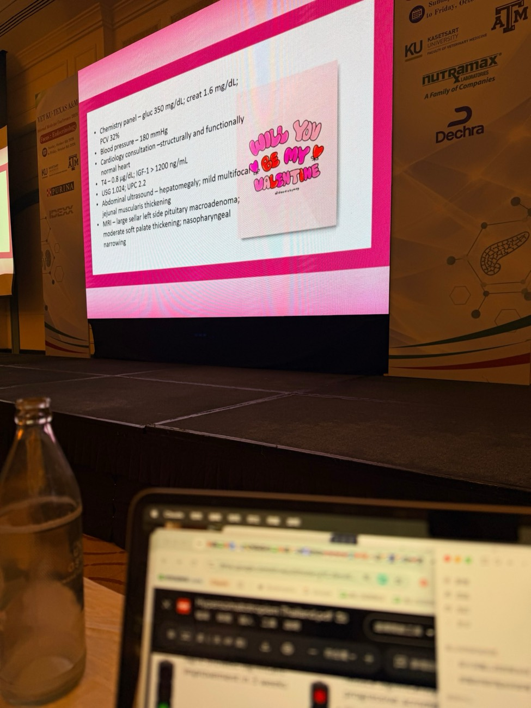
| 檢查 | 結果 | 💡 意義 |
|---|---|---|
| 血糖 | 350 mg/dL | 胰島素阻抗 |
| 肌酸酐 | 1.6 mg/dL | GH 會增加腎絲球過濾率，可能掩蓋腎病 |
| PCV | 32% | 正常偏低 |
| 血壓 | 180 mmHg | 嚴重高血壓範圍 |
| 心臟科會診 | 結構和功能都正常 | 還沒出現 GH 造成的心肌變化 |
| T4 | 0.8 µg/dL | 可能是非甲狀腺疾病（NTI），或巨腺瘤壓迫造成 TSH 不足；要驗 fT4、TSH 區分 |
| IGF-1 | >1200 ng/mL | GH 過多 |
| 尿比重／UPC | 1.024／2.2 | 明顯蛋白尿（貓 >0.4 即為蛋白尿） |
| 腹部超音波 | 肝腫大；空腸肌層輕度多處增厚 | 器官腫大；腸道增厚要鑑別發炎性腸病 vs. 小細胞淋巴瘤（淋巴瘤也會影響 IGF-1） |
| MRI | 蝶鞍偏左側大型巨腺瘤；軟顎中度增厚、鼻咽狹窄 | GH 讓上呼吸道軟組織增生，麻醉與拔管風險高 |
7. 腦下垂體切除
▾腦下垂體切除的優缺點
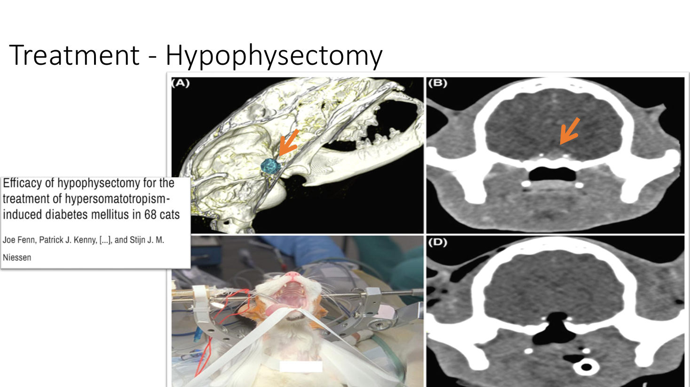
🟢 優點
- 糖尿病緩解 71–92%，中位 9 天
- 沒緩解的，胰島素劑量也大幅下降
- IGF-1 恢復正常 90%
- 飼主認為生活品質「極好」
- 存活 2.3–3.7 年
🔴 缺點
- 能做的地方少、很貴
- 死亡率 4–15%
- 終身補激素：levothyroxine、糖皮質激素
- ± DDAVP：尿崩症可能是暫時的
- 58–72% 需要長期 DDAVP
- 37–50% 飼主擔心術後點 DDAVP 眼藥
📸 現場 經蝶骨腦下垂體切除術
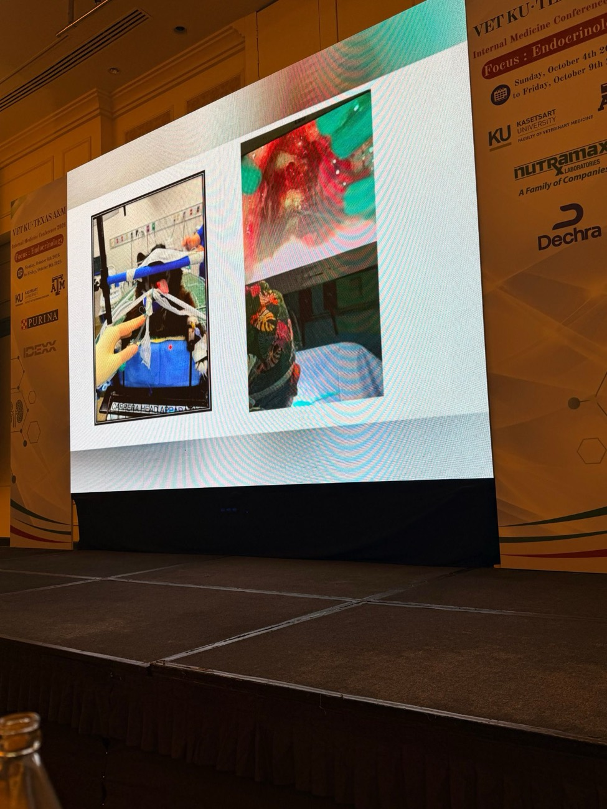
✍️ 手術中每隔一段時間要放鬆，因為下巴不能撐開太久。
💡 貓嘴巴撐到最大時，下顎冠狀突會壓迫上頜動脈，而它是貓視網膜和腦部的主要血流來源。撐太久可能造成術後失明或神經症狀。牙科、口腔手術用開口器時也一樣要注意。Valentine 這類軟顎增厚的貓，經口入路更困難。
飼主觀點：術前術後的生活品質
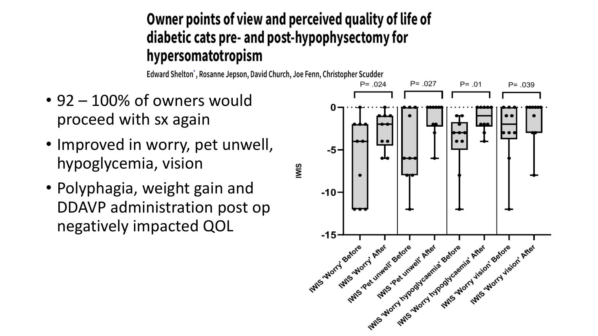
- 92–100% 的飼主願意再做一次手術。
- 改善的項目：飼主的擔心、寵物看起來不舒服、低血糖、視力（四項 P 值 0.01–0.039）。
- 術後的多食、體重增加、DDAVP 給藥對生活品質有負面影響。
💡 圖的 Y 軸是 IWIS（項目加權影響分數），0 分＝沒有負面影響，越負越差。術後大部分的點集中在 0 附近。跟飼主溝通時，可以同時說明「幾乎都覺得值得」和「術後要長期補藥、控制體重」。
8. 放射治療
▾優缺點
🟢 優點
- 比較普及
- 大腫瘤、有神經症狀的貓獲益最多
- 有神經症狀的貓 2/3 在 3 週內明顯改善
🔴 缺點
- 需要多次麻醉
- 效果多變、難預測，反應可能延遲幾週到幾年
- IGF-1（和 GH）通常不會明顯下降，肢端肥大外觀持續惡化
- 失明少見；可能甲狀腺功能低下、癲癇
立體定位放射治療（SRT）的結果
- 糖尿病緩解（暫時或永久）32%。
- 胰島素需求下降 95%；降到最低劑量的中位時間 285–399 天，這段期間要密切監測血糖。
- 糖尿病復發 38%。
- 中位存活：SRT 1072 天，傳統分次放射 508–840 天。
✍️ 有時候做完放射治療，血糖要等一段時間才會下降，要等到降下來才能不用打胰島素，但不知道要等到什麼時候。
💡 放射線是讓腫瘤細胞在分裂時慢慢死去，GH 是逐漸下降。最大的風險是：胰島素阻抗突然減輕時，原本的高劑量變成過量 → 低血糖。適合用連續血糖監測或居家驗血糖，看到下降趨勢就減量。判斷有沒有效要看胰島素劑量，不是看 IGF-1（Valentine 就是 IGF-1 沒降）。
📸 現場 不是每隻貓都能麻醉
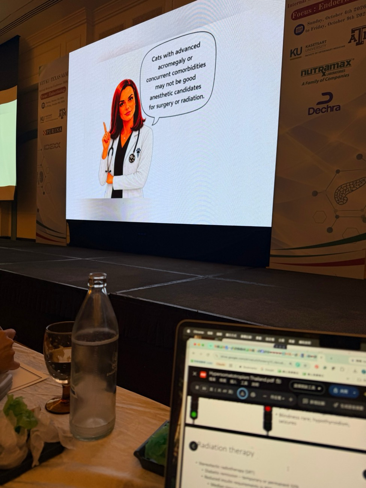
💡 麻醉風險來自 GH 本身造成的問題：上呼吸道軟組織增生（插管困難、拔管後阻塞）、心肌肥厚／心衰竭、高血壓、腎病、控制差的糖尿病、巨腺瘤。越早發現 HS，越有機會在還能麻醉時做確定性治療。
9. 針對 GH 的內科藥物
▾📸 現場 貓腦下垂體的受體
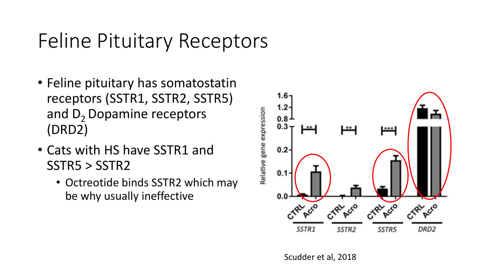
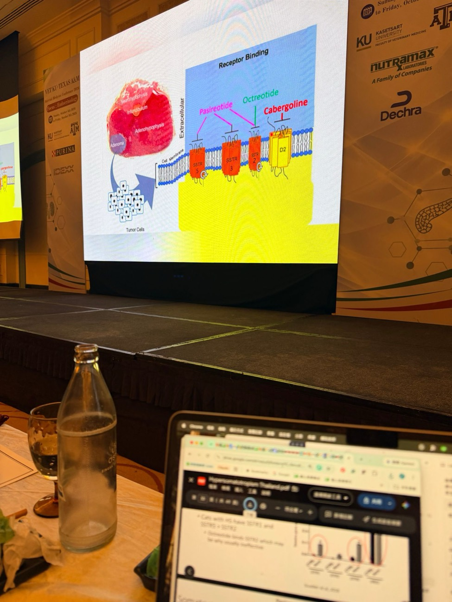
- 貓的腦下垂體有體抑素受體（SSTR1、SSTR2、SSTR5）和 D2 多巴胺受體（DRD2）。
- HS 貓的腫瘤 SSTR1、SSTR5 多於 SSTR2。
- Octreotide 只結合 SSTR2，這可能是它通常無效的原因。
| 藥物 | 類別 | 結合的受體 |
|---|---|---|
| Pasireotide | 多受體型體抑素類似物 | SSTR1、2、3、5 |
| Octreotide | 傳統體抑素類似物 | 只有 SSTR2 |
| Cabergoline | 多巴胺促效劑 | D2 |
體抑素類似物：Pasireotide
- 多受體結合型：降低 IGF-1、減少外源胰島素需求、38% 糖尿病緩解。
- 注射劑型（短效和長效 LAR，商品名 Signifor LAR 40／60 mg）。
- 副作用：腹瀉、低血糖。
- 在美國貴到難以負擔：每針 2 萬美元（約 67.7 萬泰銖）。
💡 長效劑型是每月一次。開始用藥時要預先減少胰島素，GH 一降，胰島素阻抗會很快減輕。
📸 現場 Cabergoline
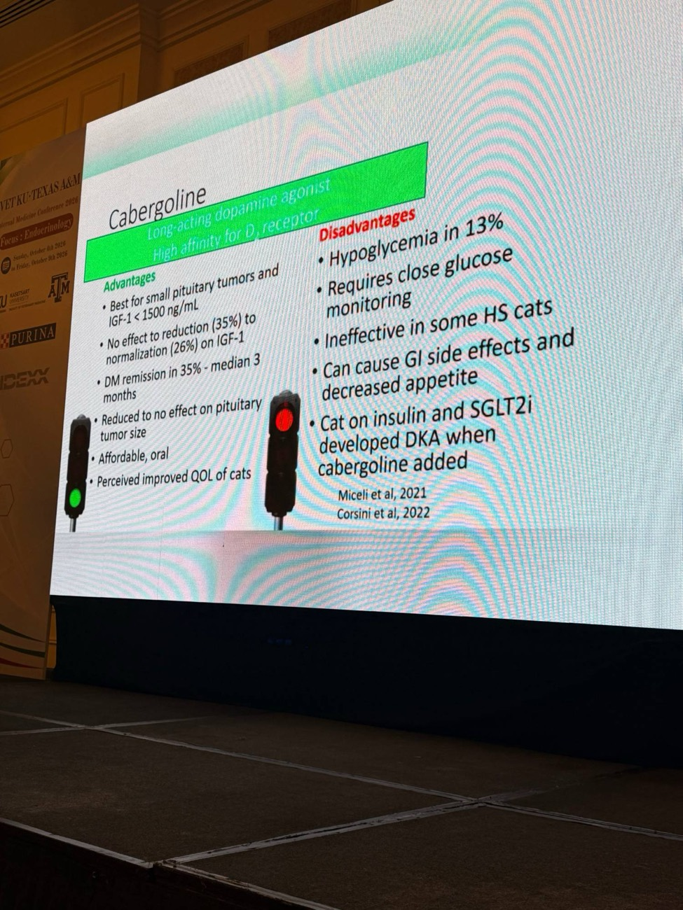
長效多巴胺促效劑，對 D₂ 受體親和力高。
🟢 優點
- 最適合小腫瘤、IGF-1 <1500 ng/mL
- 對 IGF-1：無效、下降（35%）到恢復正常（26%）
- 35% 糖尿病緩解，中位 3 個月
- 對腫瘤大小：縮小到無效
- 便宜、口服
- 飼主覺得生活品質改善
🔴 缺點
- 13% 低血糖
- 需要密切監測血糖
- 部分 HS 貓無效
- 腸胃道副作用、食慾下降
- 一隻用胰島素＋SGLT2i 的貓，加上 cabergoline 後發生 DKA
💡 DKA 的可能機轉：cabergoline 讓食慾下降 → 吃得少、胰島素被減量 → SGLT2i 讓血糖看起來不高，身體卻缺胰島素 → 正常血糖型 DKA（📖 08）。併用 SGLT2i 時加 cabergoline，要注意食慾並驗酮體。劑量可參考 📄 34 病例：10 µg/kg PO q48h。
📸 現場 Pegvisomant（Somavert®）
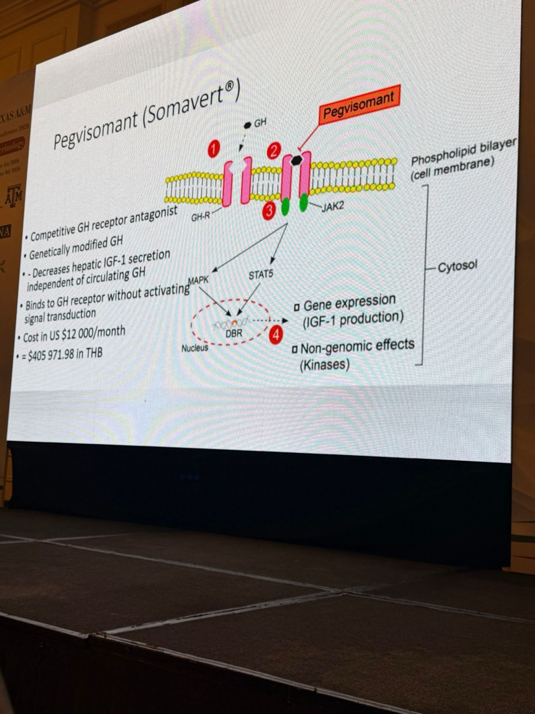
- 競爭性 GH 受體拮抗劑，是經基因改造的 GH。
- 和 GH 受體結合，但不啟動訊號傳遞（JAK2 → STAT5／MAPK → IGF-1 基因表現）。
- 降低肝臟分泌 IGF-1，和血中 GH 濃度無關。
- 美國價格每月 1.2 萬美元（約 40.6 萬泰銖）。
💡 像一把插得進鎖孔、卻轉不動的假鑰匙。和 pasireotide、cabergoline 不同，它不管腫瘤，而是阻斷全身的 GH 作用；腫瘤本身沒被治療，GH 甚至可能因失去負回饋而更高，只能用 IGF-1 監測。
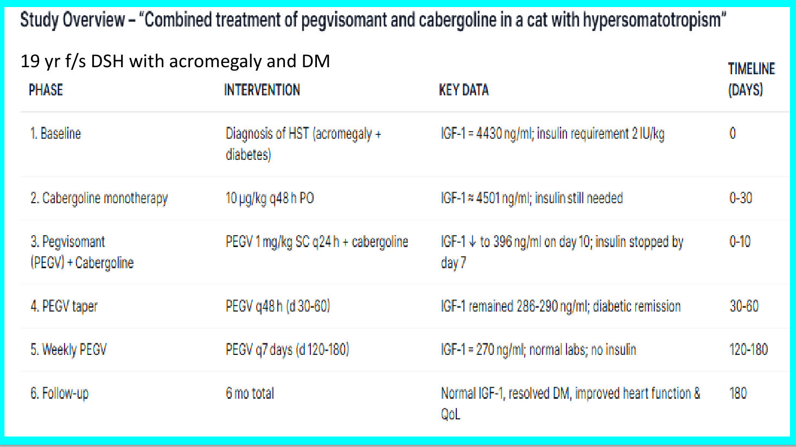
📄 34 病例：19 歲 F/S DSH，肢端肥大＋糖尿病。
| 階段 | 治療 | 結果 | 天數 |
|---|---|---|---|
| 1. 基準 | 診斷 HS＋糖尿病 | IGF-1 4430 ng/mL；胰島素 2 IU/kg | 0 |
| 2. Cabergoline 單獨 | 10 µg/kg PO q48h | IGF-1 4501；仍需胰島素 | 0–30 |
| 3. PEGV＋cabergoline | PEGV 1 mg/kg SC q24h＋cabergoline | IGF-1 第 10 天降到 396；第 7 天停胰島素 | 0–10 |
| 4. PEGV 減量 | q48h | IGF-1 286–290；糖尿病緩解 | 30–60 |
| 5. 每週 PEGV | q7d | IGF-1 270；檢驗正常；不需胰島素 | 120–180 |
| 6. 追蹤 | 共 6 個月 | IGF-1 正常、糖尿病緩解、心臟功能和生活品質改善 | 180 |
💡 四種針對 GH 的藥物比較
| 藥物 | 作用位置 | 給藥 | 貓的證據 | 價格 |
|---|---|---|---|---|
| Octreotide | 腫瘤 SSTR2 | 注射 | 通常無效 | — |
| Pasireotide | 腫瘤 SSTR1、2、3、5 | 每月注射 | 最好，38% 緩解 | 每針 2 萬美元 |
| Cabergoline | 腫瘤 D2 | 口服 | 35% 緩解 | 便宜 |
| Pegvisomant | 全身 GH 受體 | 注射 | 病例報告 | 每月 1.2 萬美元 |
10. 胰島素與 SGLT2 抑制劑
▾只用胰島素
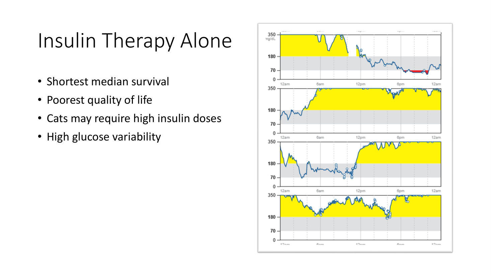
- 只用胰島素：中位存活最短、生活品質最差；可能需要高劑量；血糖變異很大。
- GH 是脈衝式分泌，胰島素阻抗會波動，胰島素需求可能劇烈改變。
- 低血糖是最大的擔心，也可能因臨床低血糖來院：單次發生 25%，多次發生 50%。
- 治療目標：改善但不追求正常化臨床症狀、盡量避免低血糖；寧可給太少，不要給太多；緩解不是目標。
💡 📄 37 用《冰與火之歌》Ned Stark 的梗：「永遠要提防低血糖的偷襲！」
SGLT2 抑制劑：ECVIM 2025 摘要
Mishra, Behrend, Niessen：〈大型糖尿病貓的好消息：SGLT2 抑制劑用於貓 HS／肢端肥大症〉
- 13 隻 HS＋糖尿病貓，胰島素加 bexagliflozin（6 隻）或 velagliflozin（7 隻）。
- 2 隻停掉胰島素；最高血糖中位數下降。
- 血酮 0.2–7.8 mmol/L（10 隻有測）；沒有臨床低血糖、沒有 DKA。
- 中位追蹤 202 天（5–405）。
- 結論：SGLT2i 看起來有希望，改善生活品質、臨床和生化指標。
Velagliflozin 用於 8 隻 HS 糖尿病貓
Del Baldo, Corsini, Bresciani, Pergolese, Tirelli, Tardo, Fracassi
- 糖尿病臨床評分改善 6/8；FreeStyle Libre 指標改善。
- 7 天後胰島素劑量就比基準低；沒有臨床低血糖；2 隻停掉胰島素。
- 1 隻 DKA；1 隻急性腎損傷（原本就有 CKD）。
- 結論：velagliflozin 不論併用胰島素或單獨使用，都能改善 HS 糖尿病貓的控制。
非理想候選貓的 SGLT2i 經驗（Vanneste et al.）
- 第一隻：新診斷糖尿病＋HS，用 Senvelgo（velagliflozin），2 週內控制血糖，同時用 cabergoline。
- 第二隻：糖尿病＋HS＋慢性腹瀉，用胰島素、Senvelgo 和 cabergoline；5 個月後嚴重低血糖，胰島素減量、停 cabergoline。
💡 第二隻正是 cabergoline 讓 GH 下降後，胰島素需求變少的例子。SGLT2i 的 DKA 風險見 📖 04；HS 貓有內源性胰島素時比較適合，但要驗酮體。
11. 緩和治療：Rico 與 Mout Kitty
▾緩和治療
- 只打胰島素：有低血糖風險。
- 不治療：死於心衰竭、喉部阻塞、中樞神經症狀和其他器官衰竭。
- 注意並處理共病：關節病變、心衰竭、腎衰竭、呼吸困難、神經症狀、無法進食。
- 止痛藥、餵食管、抗癲癇藥等。
📸 現場 治療的全貌
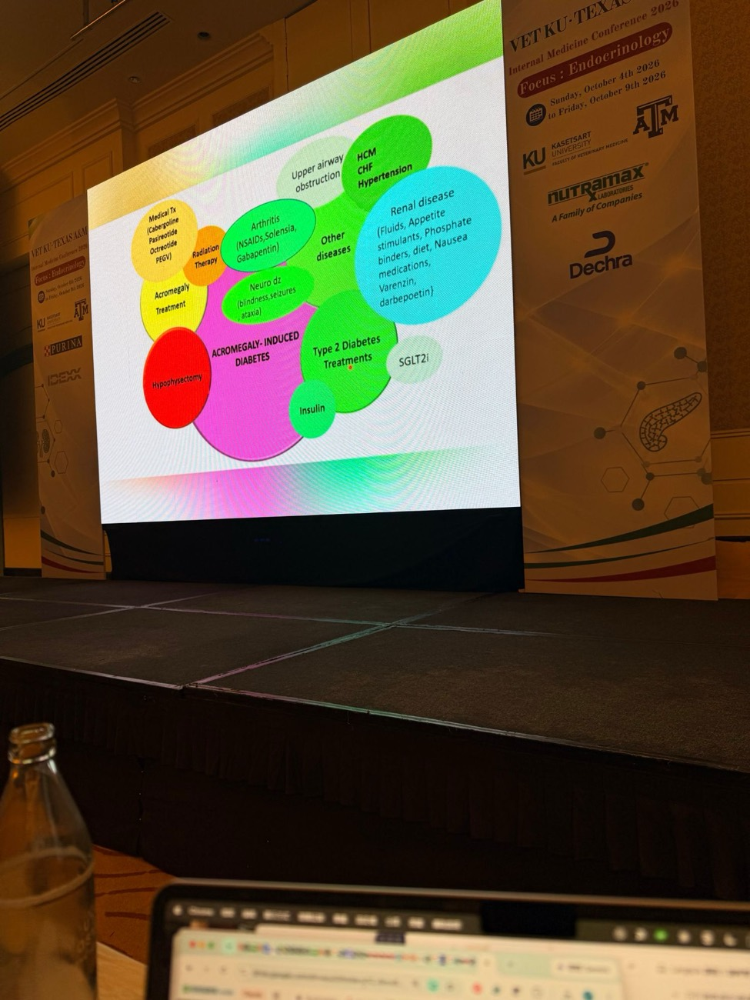
| 類別 | 內容 |
|---|---|
| 肢端肥大症治療 | 腦下垂體切除、放射治療、內科（cabergoline、pasireotide、octreotide、pegvisomant） |
| 第 2 型糖尿病治療 | 胰島素、SGLT2i |
| 上呼吸道阻塞 | — |
| 心臟 | HCM、心衰竭、高血壓 |
| 關節炎 | NSAIDs、Solensia、gabapentin |
| 神經疾病 | 失明、癲癇、運動失調 |
| 腎病 | 輸液、食慾刺激劑、磷結合劑、飲食、止吐藥、Varenzin、darbepoetin |
💡 Solensia（frunevetmab）是貓用抗 NGF 單株抗體，每月注射止關節疼痛；Varenzin（molidustat）是貓用口服 HIF 穩定劑，治療 CKD 貧血。
📸 現場 Rico 的後續
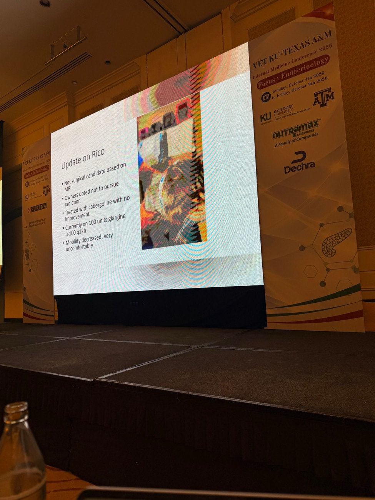
- 依 MRI 不適合手術；飼主選擇不做放射治療。
- 用 cabergoline，沒有改善。
- 目前 glargine U-100 100 單位 q12h。
- 活動力下降，非常不舒服。
💡 每次 100 單位是極端的胰島素阻抗（一般貓 1–5 單位），GH 一個脈衝下降就可能嚴重低血糖。活動力差可能來自肢端肥大性關節病變。Rico 前段的病例沒有拍到，待逐字稿補。
病例 Mout Kitty
- 14 歲 F/S DSH；2018 年因甲亢做過放射碘治療。
- 2022 年 3 月診斷糖尿病：ProZinc 3 U SQ q12h，反應差。
- 4 月改 glargine U-100 4 U q12h；6 月加到 7 U q12h。
- 8 月：流口水、吃東西時食物掉出來。
- 理學檢查：很兇！下顎增厚變硬；舌下有軟組織腫塊或增厚。
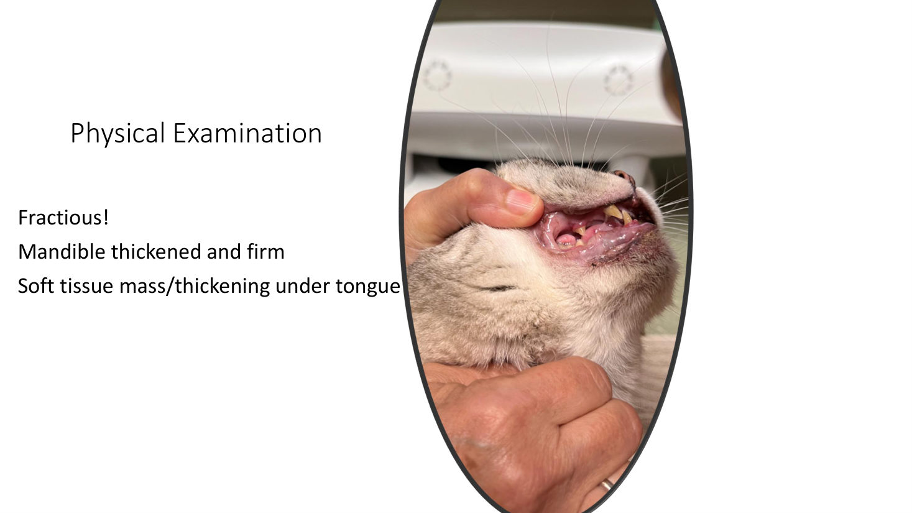
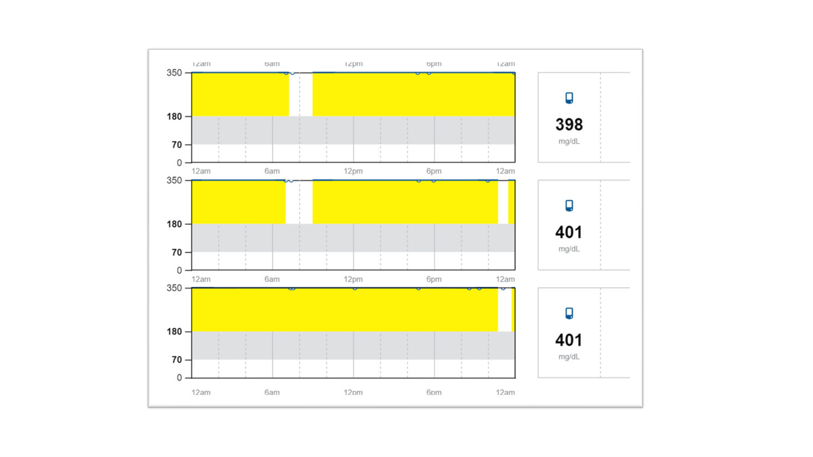
- IGF-1 308 nmol/L（2355 ng/mL）；飼主拒絕腦部影像；診斷：很可能是 HS；開始 cabergoline。
- 2022 年 10 月：cabergoline 治療後多次低血糖、進食困難，飼主選擇安樂死。
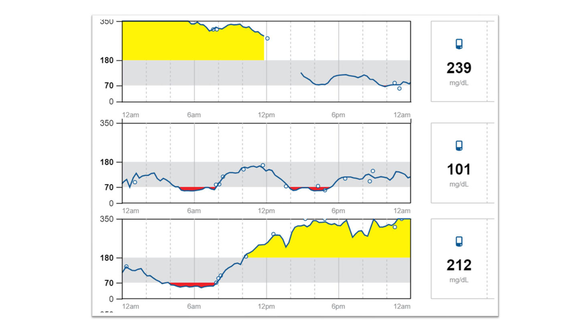
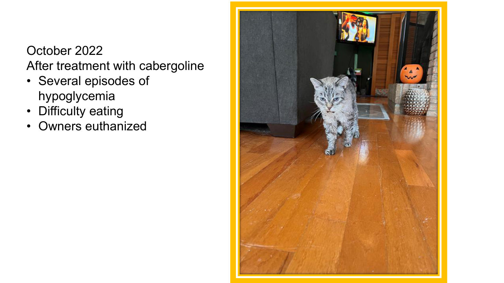
💡 這個病例同時示範了兩件事：(1) 口腔軟組織和下顎的變化會讓貓吃不下，是緩和期常見的生活品質問題；(2) cabergoline 有效時，原本的胰島素劑量會變成過量，要預先減量。另外，這隻貓之前做過放射碘治療，IGF-1 判讀時也要想到甲狀腺狀態的影響。
12. 沒有糖尿病的 HS、是或不是測驗
▾📸 現場 沒有糖尿病的貓也會有 HS 嗎？
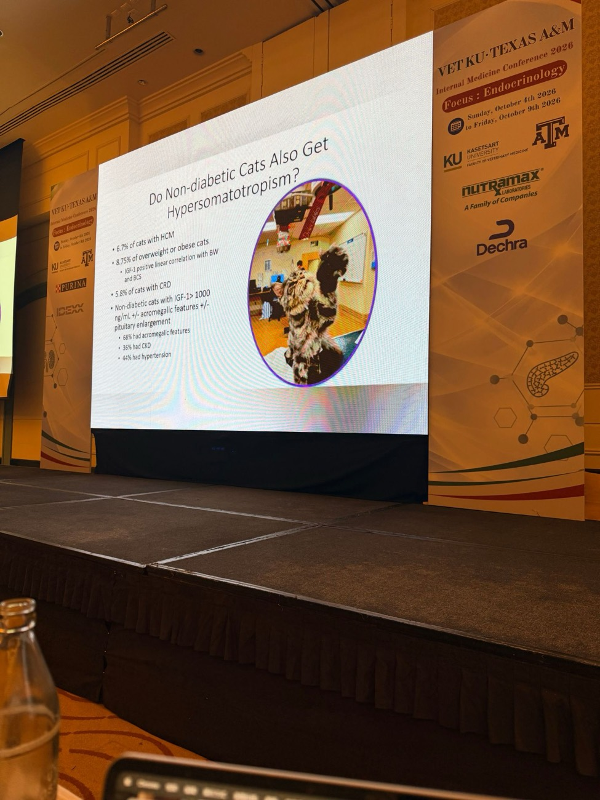
- HCM 貓中 6.7% 是 HS。
- 過重或肥胖貓中 8.75%；IGF-1 和體重、BCS 呈正向線性相關。
- 慢性腎病貓中 5.8%。
- 沒有糖尿病、IGF-1 >1000 ng/mL（± 肢端肥大外觀 ± 腦下垂體變大）的貓：68% 有肢端肥大外觀、36% 有 CKD、44% 有高血壓。
💡 會。β 細胞撐得住胰島素阻抗時血糖還正常。HCM、肥胖、CKD 的貓，尤其有寬臉、大腳掌的，可以考慮驗 IGF-1；但胖貓的 IGF-1 本來就偏高，是另一個偽陽性來源。
📸 現場 是或不是？五隻貓
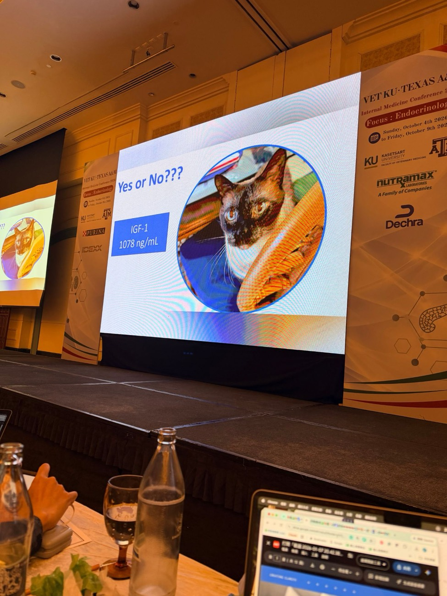
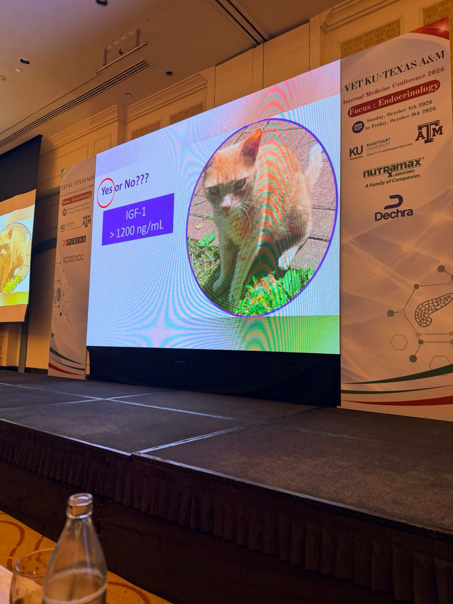
1200" loading="lazy">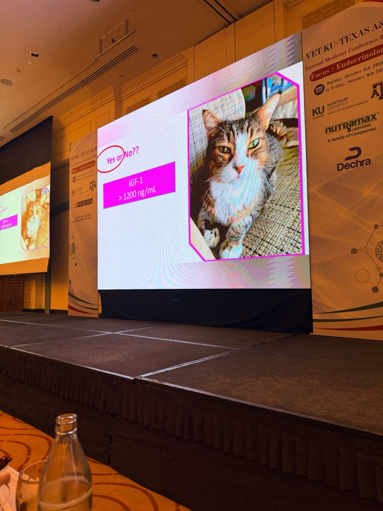
1200" loading="lazy">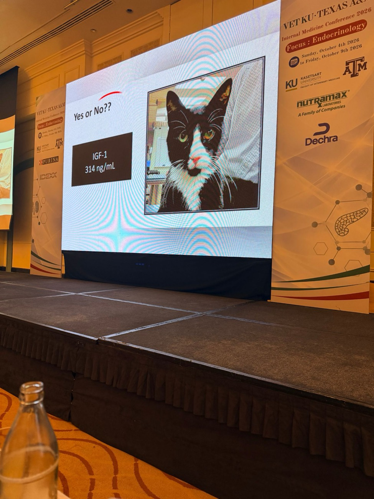
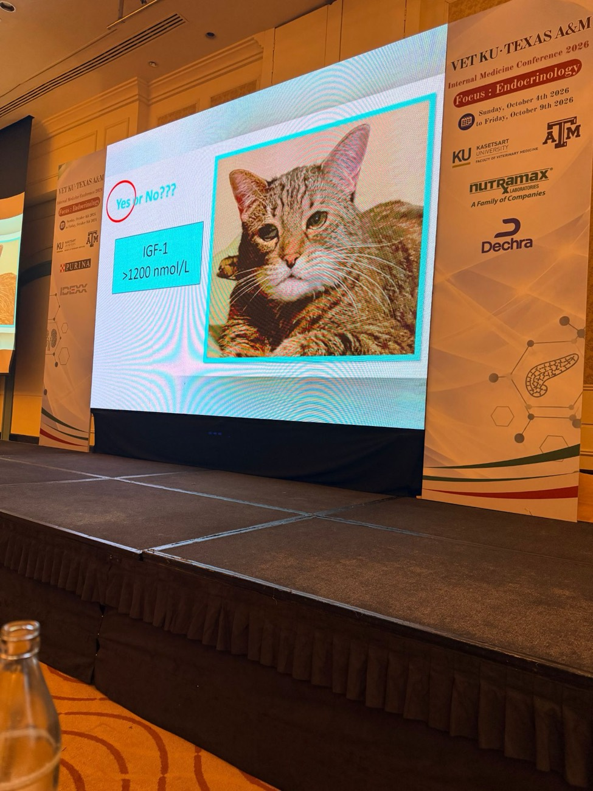
1200" loading="lazy">| 貓 | IGF-1（ng/mL） | 螢幕上的答案 | 💡 判讀 |
|---|---|---|---|
| 暹羅貓 | 1078 | 照片沒拍到圈 | 剛好超過 1000 的灰色地帶，要看臨床表現與影像 |
| 橘貓 | >1200 | Yes | 明確超過切點 |
| 長毛虎斑白貓 | >1200 | Yes | 同上 |
| 黑白貓 | 314 | 照片只拍到紅圈動畫一半 | 如果還沒打胰島素，可能是偽陰性陷阱 |
| 虎斑貓 | >1200（投影片寫 nmol/L，應為 ng/mL） | Yes | 明確超過切點 |
💡 重點：從照片幾乎看不出誰是 HS，有幾隻看起來就是普通的貓，只能靠驗 IGF-1。兩隻沒圈到的答案待逐字稿確認。
Take-home 與參考資料
▾重點
- 肢端肥大症不是罕見疾病：占所有糖尿病貓的 25%。
- 任何已治療但控制不好的糖尿病貓、以及任何糖尿病貓，都要懷疑。
- 典型外觀不一定會出現。
- 診斷：IGF-1 升高＋腦部 CT／MRI。
治療選項一覽
| 選項 | 糖尿病緩解 | 優點 | 缺點 |
|---|---|---|---|
| 腦下垂體切除 | 71–92%，中位 9 天 | IGF-1 正常化 90%；存活 2.3–3.7 年 | 少數中心、死亡率 4–15%、終身補激素 |
| 放射治療（SRT） | 32%（復發 38%） | 普及；神經症狀改善快 | 多次麻醉；效果慢且難預測 |
| Pasireotide | 38% | 證據最好的內科藥 | 每針 2 萬美元；腹瀉、低血糖 |
| Cabergoline | 35%，中位 3 個月 | 便宜、口服 | 13% 低血糖、腸胃道副作用、部分無效 |
| SGLT2i＋胰島素 | 少數停胰島素 | 改善血糖、減少胰島素 | 要監測酮體（DKA） |
| 只用胰島素 | 不是目標 | — | 存活最短、生活品質最差、低血糖 |